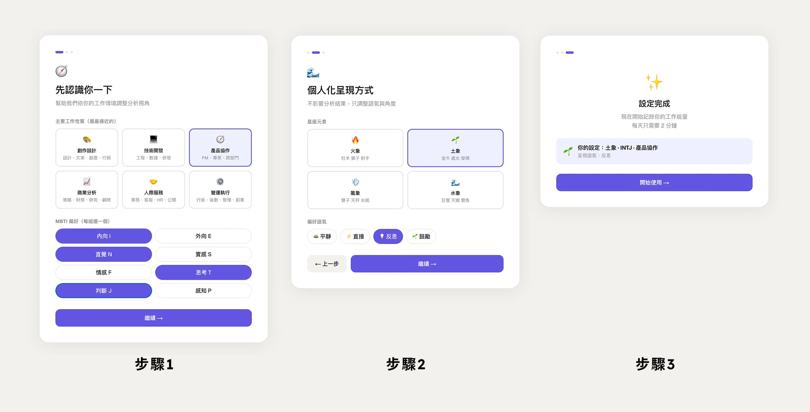
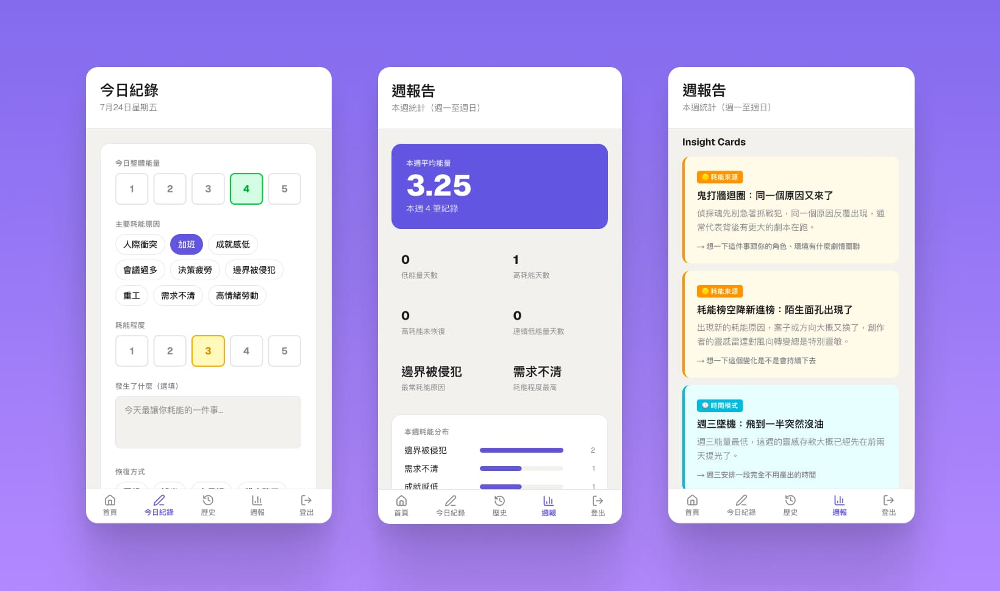

知識工作者常常說不清楚自己為什麼累。WorkEnergy 是我以 PM 身份定義、獨立開發並上線的全端專案，讓人每天花 2 分鐘記錄，把模糊的疲勞感轉換成看得懂的工作耗能模式——從產品定義、技術選型到部署，全部一人完成，約兩天從 0 到上線。
知識工作者常常知道自己很累，卻說不清楚為什麼。情緒與能量的消耗是模糊的，很難被觀察，更難被改善。
這個問題我自己感受最深。在 PM 工作裡，我長期面對高度人際耗能與需求模糊的環境，卻一直找不到一個工具能幫我把這些「感覺」變成「可觀察的資料」。現有的 mood tracker 太過情緒化，習慣追蹤工具又太廣泛，沒有一個專注在工作能量與耗能原因上的選項。
於是我決定自己做一個——不是為了解決「怎麼補充能量」，而是先讓人看見自己的耗能模式。
「每天 2 分鐘，把模糊的疲勞感，轉換成可以看見的工作耗能模式。」
這是我以 PM 身份主導、並獨立執行的全端專案。從產品定義、技術選型、開發到部署，全部一人完成。
| 層級 | 選擇 | 原因 |
|---|---|---|
| 前端 + API | Next.js 14（App Router） | 前後端同 repo，降低複雜度 |
| 資料庫 + Auth | Supabase（PostgreSQL + RLS） | 免費方案、Auth 開箱即用、RLS 安全可控 |
| Hosting | Vercel | 免費、與 Next.js 整合最佳、支援 preview branch |
| 語言 | TypeScript | 全端統一，減少型別錯誤 |
| 樣式 | Tailwind CSS | 開發速度快 |
MBTI 和星座在這裡不是用來分析你「是什麼人」，而是用來讓 Insight Cards 讀起來更像「在跟你說話」。系統依序比對以下維度，找出最貼近使用者的文案 variant：

Persona 設定畫面 — 依工作角色、MBTI、星座元素設定語氣偏好

週報畫面 — 依耗能統計觸發對應的 Insight Cards
這是我第一個從零到部署的全端 Vibe Coding 專案。技術上，我第一次完整跑完「本機開發 → staging 測試 → production 上線」的循環，真實碰到了環境變數管理、資料庫 migration、部署 pipeline 的細節。
更重要的是，這讓我對「PM 和工程師之間那條線」有了更具體的感受——哪些決定適合 AI 輔助快速完成，哪些需要工程師介入才能穩定。這個判斷力，是做過才有的。
WorkEnergy 是個人 portfolio 專案，非商業產品。